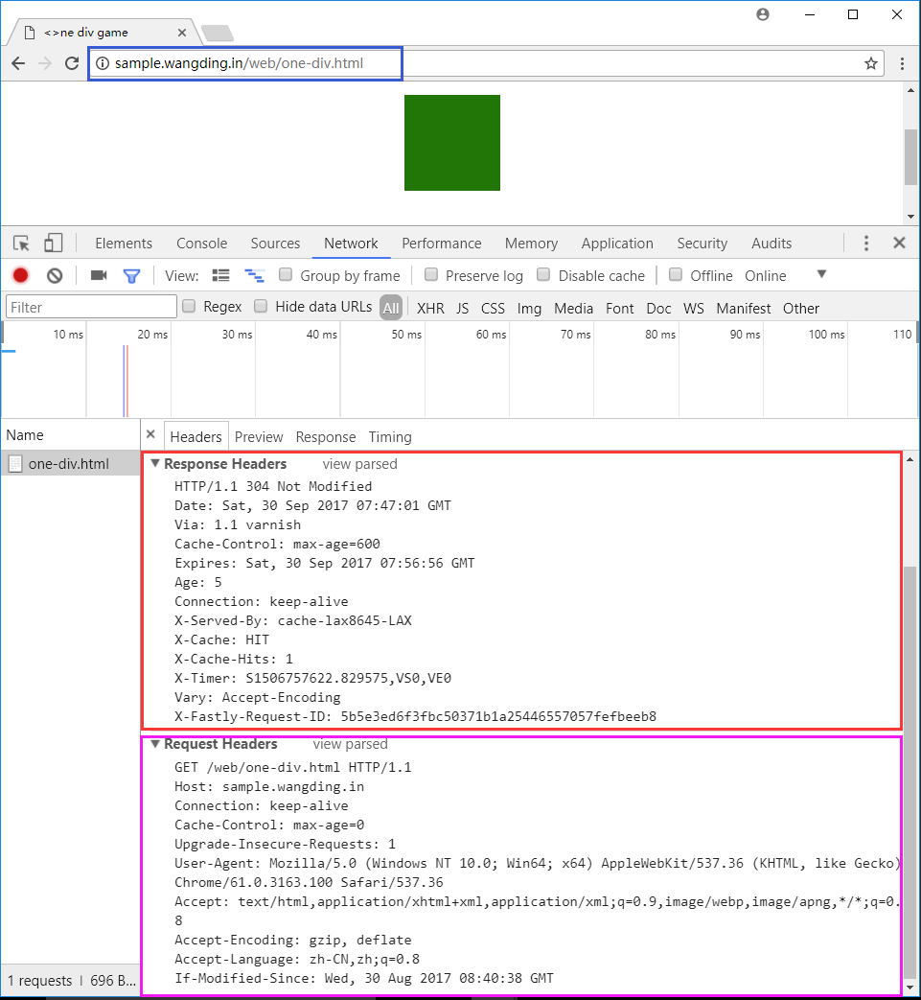
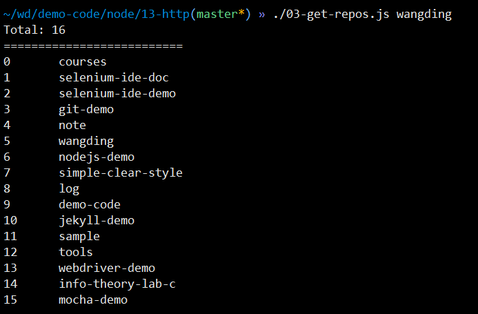

第 10 课：HTTP 网络编程（客户端）
1. 阅读 Node.js API 资料
2. 了解 HTTP 协议
要求：
- HTTP 协议相关的知识主要包括：
- HTTP 命令，包括：GET、POST，等
- HTTP 报文，包括：请求报文头，请求报文体、响应报文头和响应报文体
- HTTP 响应状态码
- 阅读 HTTP 协议资料
- 阅读 HTTP 协议入门
- 阅读 HTTP 头部字段资料
- 阅读 HTTP 状态码资料
- 用 telnet 工具了解 HTTP 协议的相关知识
- 用 curl 工具了解 HTTP 协议的相关知识
- 用 chrome 开发者工具了解 HTTP 协议的相关知识
- 用上面三个工具访问 http://sample.wangding.in/web/one-div.html ，查看请求和响应的头信息，如下图所示：
- 搞明白请求头部字段列表中每个字段的含义和作用
- 搞明白响应头部字段列表中每个字段的含义和作用
3. GET 请求网站页面
要求：
- 创建 16-http-client 目录
- 编写 01-my-curl.js 脚本
- 获取命令行参数：要请求的 URL 地址
- 向该 URL 地址发出 GET 请求
- 将 HTTP 响应的起始行、响应头和响应体内容打印到控制台
- 定义 user-agent 为 01-my-curl
- 用 http 模块的 get 方法实现
- 运行并测试程序
4. GET 请求 HTTP API
要求：
- 编写 02-get-weather.js 脚本
- 调用天气预报 API，实现城市天气查询：https://www.juhe.cn/docs/api/id/39
- 用 GET 方法请求天气信息
- 支持命令行参数：城市名称
- 运行并测试程序
要求：
- 编写 03-get-repos.js 脚本
- 获取某个账户的所有 GitHub 仓库的数量和名称
- 账户信息通过命令行参数获取
- API 地址：
https://api.github.com/search/repositories?q=user:wangding - API 参考：https://developer.github.com/v3/
- 运行并测试程序
- 运行效果如下图所示：
5. POST 发送数据
要求：
- 编写 04-post.js 脚本
- 向指定的 URL 地址发出 HTTP POST 请求
- POST 请求中携带向服务器程序发送的特定数据
- 向服务器程序发送的数据通过命令行参数获取
- 将服务器程序的响应起始行、响应头和响应体内容打印到控制台
- 编写 04-server.js 脚本
- 接收 04-post.js 脚本发送的 POST 请求数据
- 将接收到的请求起始行、请求头和请求体数据打印到控制台
- 运行并测试程序
6. 爬虫程序
要求：
- 创建 05-crawler 目录
- 创建项目配置文件：package.json
npm i -S cheerio安装项目依赖 cheerio- 用 cheerio 对爬取的 HTML 页面进行 DOM 元素解析
- cheerio 用法请参考：cheerio API
- 爬取 segmentfault 网站的免费课程信息
- 需爬取的网页地址：https://segmentfault.com/lives/free
- 从爬取的网页中解析出课程信息，包括：课程名称，课程地址
- 将爬取的课程信息格式化输出到控制台
7. HTTP 重定向
要求：
- 编写 06-redirection.js 脚本
- 实现对 HTTP 协议的重定向状态的处理
- 测试 URL：http://www.sian.com/
- 需要获取重定向后的最终页面
- 将最终页面输出到控制台